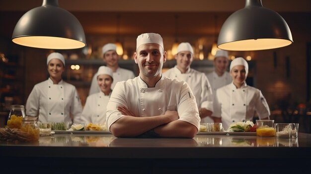

Nuestro Equipo
En Cogosfish, nos enorgullecemos de ofrecer productos del mar frescos y de alta calidad. Nuestro equipo de profesionales apasionados y dedicados trabaja incansablemente para garantizar que cada plato que servimos sea una experiencia culinaria excepcional.
Nuestro equipo de chefs está compuesto por expertos en mariscos que comparten una pasión por la excelencia culinaria. Cada uno de ellos aporta su creatividad y experiencia para crear platos únicos y memorables que deleitarán a tus invitados.
Además, nuestros chefs están en constante formación y actualización para incorporar las últimas tendencias culinarias y técnicas innovadoras en nuestros menús. El personal de servicio de Cogosfish está altamente capacitado para ofrecer una atención al cliente excepcional.
Nos aseguramos de que cada detalle esté perfectamente coordinado para que tú puedas disfrutar de tu evento sin preocupaciones. Más información..